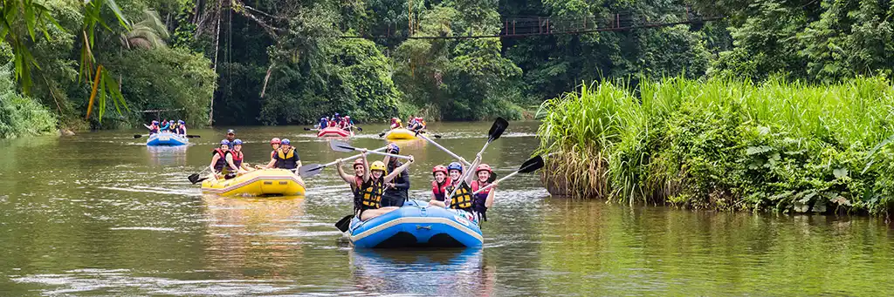
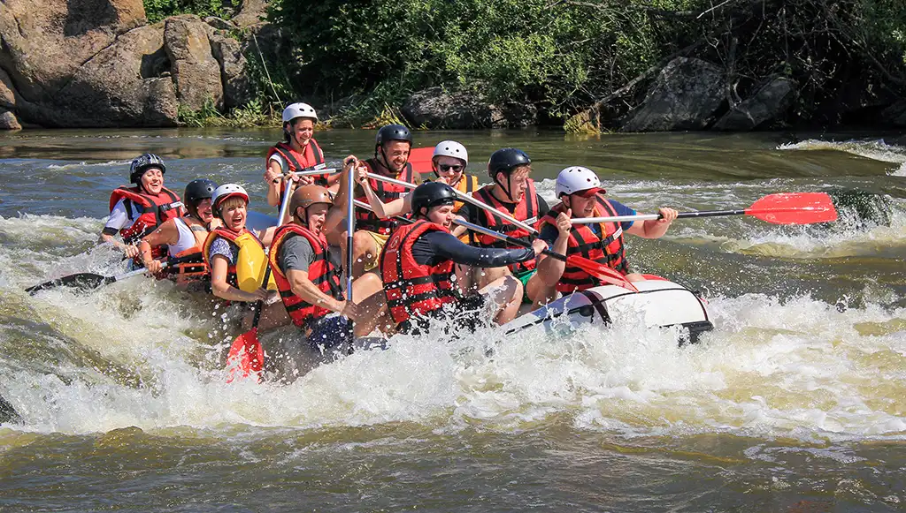
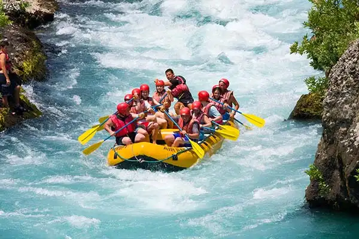

Rapids White Water Rafting
Making Memories
Trips

Highlights: Paddle through Africa’s third-longest river, with
breathtaking views
of the Niger Delta
and lush mangroves.
Experience Level: Beginner to intermediate. Calm stretches with
occasional
rapids.
Duration: Full-day adventure (6–8 hours).
Extras: Birdwatching, cultural stops at riverside communities, and
local cuisine
tasting.

Highlights:Explore Nigeria’s major tributary of the Niger, flowing
from Cameroon
into Nigeria.
Known for wide waters and scenic landscapes.
Experience Level: Beginner-friendly, with options for longer
endurance trips.
Duration: Half-day (4 hours) or sunset cruises.
Extras: Canoe rides, photography tours, and riverside picnics.

Highlights: Thrilling rapids near the Ikere Gorge Dam and Old Oyo
National Park. Perfect for
adrenaline seekers.
Experience Level: Intermediate to advanced. Strong currents and
technical paddling required.
Duration: Half-day (4–5 hours).
Extras: Wildlife spotting, camping options, and guided safety
training.
| Trip Name | River Location | Price per Person | Difficulty Level |
|---|---|---|---|
| Niger River Expedition | Niger Delta Area of Nigeria | $100 | Beginner |
| Benue River Adventure | Eastern Nigeria | $80 | |
| kaduna River Rapids | Kaduna and Oyo State | $50 | Advanced |
Book Trip
Ready to embark on your rafting adventure?